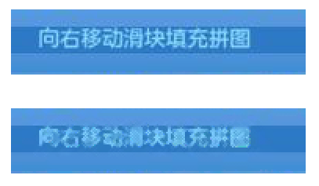

| 命令名称 | Filter_DispelSpot 祛除斑点 |
| 命令功能 | (通用图像处理)图像斑点祛除 |
| 语法格式 | TURING.Filter_DispelSpot(Sensitivity, Num) |
| 参数说明 |
Sensitivity：整数型，周边颜色与中间颜色的差值灵敏度，默认25 Num：整数型，平均色的元素个数，默认2 |
| 返回值 | 无 |
| 按键精灵 |
复制代码
'获取屏幕图像数据 Call TURING.Pixel_FromScreen(0,0,200,100) '图像预览 Call TURING.Pixel_Preview() '祛除斑点处理 Call TURING.Filter_DispelSpot(25) '图像预览 Call TURING.Pixel_Preview() |
| 滤镜效果 |  |